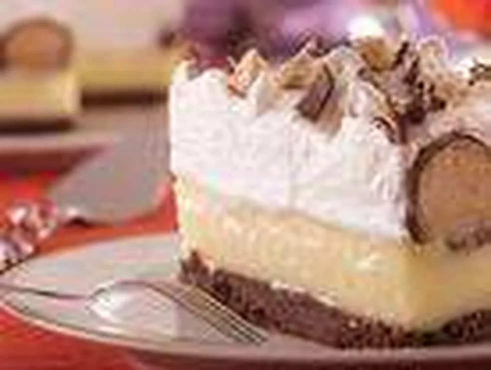

Home
Torta de Sonhoss

Descrição
Uma torta rica e encantadora, feita com massa de sonhos e creme de sonhos, que é um verdadeiro convite ao mundo dos sonhos. Perfeita para aniversários ou como um doce especial para qualquer ocasião.
Ingredientes
- 250g de massa de sonhos
- 150g de creme de sonhos
- 100g de frutas secas
- 50g de chocolate derretido
Modo de Preparo
- Estenda a massa em uma forma
- Espalhe o creme de sonhos sobre a massa
- Adicione as frutas secas
- Cubra com chocolate derretido e deixe esfriar